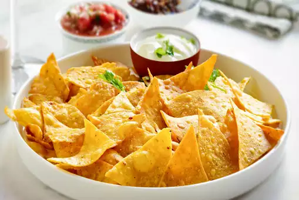

return
Corn Nachos

If there is one snack that is an absolute favorite of everyone across the globe, it is Corn Nachos. Made using corn kernels, maize flour, all purpose flour, salt, chilli flakes, oregano and water, this snack recipe is perfect to satiate the midnight hunger pangs and is absolutely lip-smacking. Pair this Mexican recipe with guacamole, salsa or any cheesy dip and trust us, no one will be able to resist its flavors.
Special occasions like kitty parties, picnics, game nights and birthdays are apt to relish this vegetarian recipe and will surely leave everyone craving for more. Prepare this easy recipe for your loved ones and devour your taste buds in its crispiness!
Ingredients
- 2 cup maize flour
- 3/4 cup American corn kernels
- salt as required
- water as required
- 3/4 cup all purpose flour
- 1 teaspoon oregano
- chilli flakes as required
- refined oil as required
Steps
- To make this snack recipe, transfer the corn kernels in a blender and blend corn to a smooth paste. Take a large bowl and mix together all purpose flour, maize flour, corn paste, chilli flakes, salt and oregano. Add lukewarm water and knead it in the form of a stiff dough.
- Divide the dough into equal balls. Dust the kitchen surface with flour and gently roll each ball out into a thin chapatis. Now, using a triangle-shaped cookie cutter, cut triangles from the chapatis.
- Heat enough refined oil in a deep-bottomed pan over medium flame. When the oil is hot enough, add the triangles in it and deep fry the nachos until golden and crisp. Once done, transfer these on a plate lined with absorbent paper. Serve these with with salsa or guacamole, cheesy dips or sauce of your choice to enjoy!